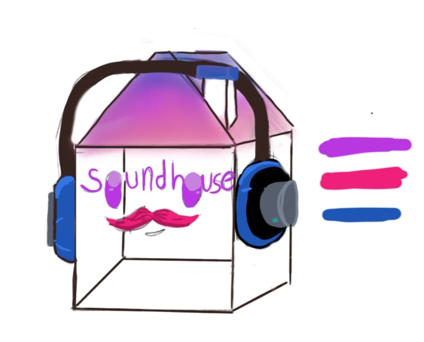

Dispositivo Musical Ambientalizador
A partir do movimento detectado pelo 'Sound House', uma música de sua playlist é selecionada, transformando o ambiente em algo correspondente ao seu humor. Acreditamos que a música transforma o espaço à sua volta, e seria excelente tê-la ao seu dispor em qualquer cômodo de sua casa.
Integrantes: Ana Neri, Bianca, Isabella Faria e Maria Luísa Galani - 2EMRA